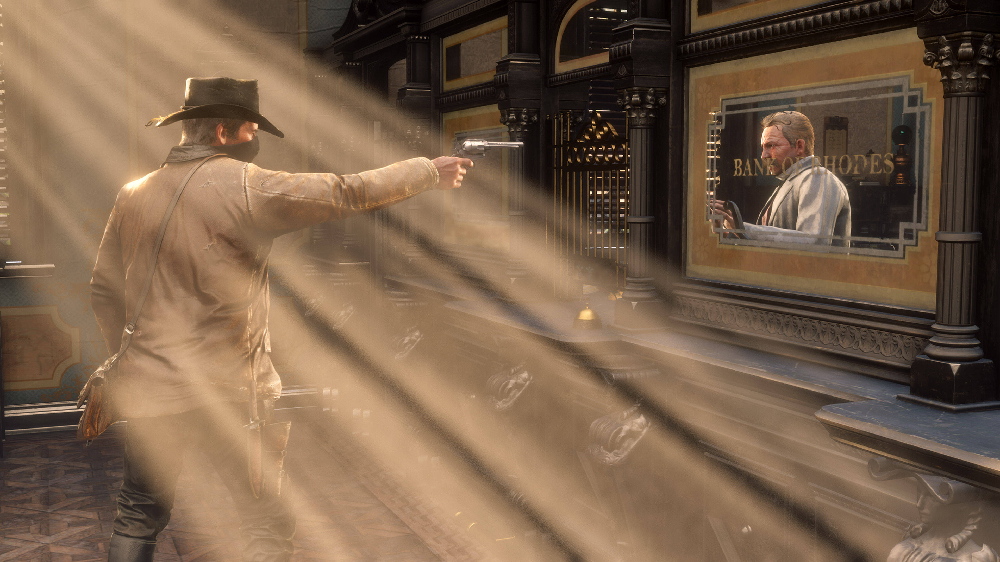
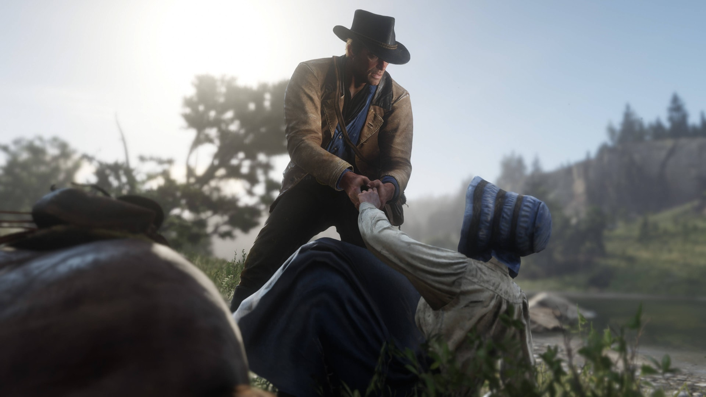
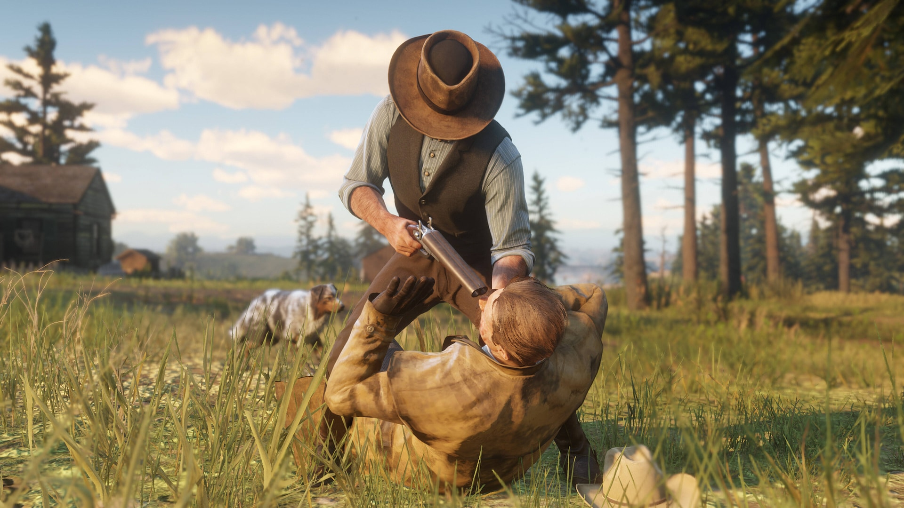

O sistema de honra em Red Dead Redemption 2 influencia diretamente como o mundo reage a Arthur Morgan. Ele mede as ações do jogador, classificando-as como honrosas ou desonrosas, afetando a história, as interações com NPCs e até o final do jogo.

As ações de Arthur Morgan determinam seu nível de honra. Boas ações aumentam sua reputação, enquanto atos criminosos reduzem seu nível de honra. Esse sistema impacta o comportamento dos NPCs, os preços nas lojas e até mesmo os finais do jogo.

